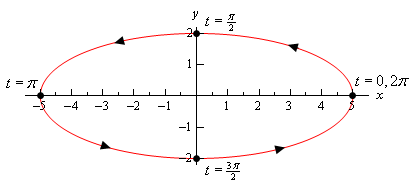

To this point (in both Calculus I and Calculus II) we’ve
looked almost exclusively at functions in the form  or and almost all of the formulas that we’ve
developed require that functions be in one of these two forms. The problem is that not all curves or
equations that we’d like to look at fall easily into this form.
or and almost all of the formulas that we’ve
developed require that functions be in one of these two forms. The problem is that not all curves or
equations that we’d like to look at fall easily into this form.
Take, for example, a circle.
It is easy enough to write down the equation of a circle centered at the
origin with radius r.
However, we will never be able to write the equation of a
circle down as a single equation in either of the forms above. Sure we can solve for x or y as the following
two formulas show
but there are in fact two functions in each of these. Each
formula gives a portion of the circle.
Unfortunately we usually are working on the whole circle, or
simply can’t say that we’re going to be working only on one portion of it. Even if we can narrow things down to only one
of these portions the function is still often fairly unpleasant to work with.
There are also a great many curves out there that we can’t
even write down as a single equation in terms of only x and y. So, to deal with some of these problems we
introduce parametric equations. Instead of defining y in terms of x ( ) or x in terms of y ( ) we define both x and y in terms of a
third variable called a parameter as follows,
This third variable is usually denoted by t (as we did here) but doesn’t have to
be of course. Sometimes we will restrict
the values of t that we’ll use and at
other times we won’t. This will often be
dependent on the problem and just what we are attempting to do.
Each value of t
defines a point that we can plot. The collection of points that we get by
letting t be all possible values is
the graph of the parametric equations and is called the parametric curve.
Sketching a parametric curve is not always an easy thing to
do. Let’s take a look at an example to
see one way of sketching a parametric curve.
This example will also illustrate why this method is usually not the
best.
|
Example 1 Sketch
the parametric curve for the following set of parametric equations.
Solution
At this point our only option for sketching a parametric
curve is to pick values of t, plug
them into the parametric equations and then plot the points. So, let’s plug in some t’s.
|
t
|
x
|
y
|
|
-2
|
2
|
-5
|
|
-1
|
0
|
-3
|
|
|
|
-2
|
|
0
|
0
|
-1
|
|
1
|
2
|
1
|
The first question that should be asked at this point is,
how did we know to use the values of t
that we did, especially the third choice?
Unfortunately there is no real answer to this question. We simply pick t’s until we are fairly confident that we’ve got a good idea of
what the curve looks like. It is this
problem with picking “good” values of t
that make this method of sketching parametric curves one of the poorer
choices. Sometimes we have no choice,
but if we do have a choice we should avoid it. We’ll discuss an alternate graphing method
in later examples.
We have one more idea to discuss before we actually sketch
the curve. Parametric curves have a direction of motion. The direction of motion is given by
increasing t. So, when plotting parametric curves we also
include arrows that show the direction of motion. We will often give the value of t that gave specific points on the
graph as well to make it clear the value of t that gave that particular point.
Here is the sketch of this parametric curve.
So, it looks like we have a parabola that opens to the
right.
Before we end this example there is a somewhat important
and subtle point that we need to discuss first. Notice that we made sure to include a
portion of the sketch to the right of the points corresponding to and to indicate that there are portions of the
sketch there. Had we simply stopped
the sketch at those points we are indicating that there was no portion of the
curve to the right of those points and there clearly will be. We just didn’t compute any of those points.
This may seem like an unimportant point, but as we’ll see
in the next example it’s more important than we might think at this point.
|


Before addressing a much easier way to sketch this graph
let’s first address the issue of limits on the parameter. In the previous
example we didn’t have any limits on the parameter. Without limit on the
parameter the graph will continue in both directions as shown in the sketch
above.
We will often have limits on the parameter however and this
will affect the sketch of the parametric equations. To see this effect
let’s look a slight variation of the previous example.
|
Example 2 Sketch
the parametric curve for the following set of parametric equations.
Solution
Note that the only difference here is the presence of the
limits on t. All these limits do is tell us that we can’t take
any value of t outside of this range. Therefore, the parametric
curve will only be a portion of the curve above. Here is the parametric
curve for this example.
Notice that with this sketch we started and stopped the
sketch right on the points originating from the end points of the range of t’s.
Contrast this with the sketch in the previous example where we had a
portion of the sketch to the right of the “start” and “end” points that we
computed.
In this case the curve starts at and ends at ,
whereas in the previous example the curve didn’t really start at the right
most points that we computed. We need
to be clear in our sketches if the curve starts/ends right at a point, or if
that point was simply the first/last one that we computed.
|
It is now time to take a look at an easier method of
sketching this parametric curve. This method uses the fact that in many,
but not all, cases we can actually eliminate the parameter from the parametric
equations and get a function involving only x
and y. There will be two small
problems with this method, but it will be easy to address those problems. It is important to note however that we won’t
always be able to do this.
Just how we eliminate the parameter will depend upon the
parametric equations that we’ve got. Let’s see how to eliminate the
parameter for the set of parametric equations that we’ve been working with to
this point.
|
Example 3 Eliminate
the parameter from the following set of parametric equations.
Solution
One of the easiest ways to eliminate the parameter is to
simply solve one of the equations for the parameter (t, in this case) and substitute that into the other
equation. Note that while this may be the easiest to eliminate the
parameter, it’s usually not the best way as we’ll see soon enough.
In this case we can easily solve y for t.
Plugging this
into the equation for x gives,
Sure enough from our Algebra knowledge we can see that
this is a parabola that opens to the right.
We won’t bother with a sketch for this one as we’ve already
sketched this once and the point here was more to eliminate the parameter
anyway.
|
Getting a sketch of the parametric curve once we’ve
eliminated the parameter is fairly simple. All we need to do is graph the
equation that we found by eliminating the parameter.
As noted already however, there are two small problems with
this method. The first is direction of motion. The equation
involving only x and y will NOT give the direction of motion of
the parametric curve. This is an easy problem to fix however. All
we need to do is plug in some values of t into the parametric equations
and we can determine direction of motion from that. How many values of t
we plug in will depend upon the parametric equations. In some cases only
two will be required and in others we might need more points.
The second problem is best illustrated in an example as
we’ll be running into this problem in the remaining examples.
|
Example 4 Sketch
the parametric curve for the following set of parametric equations.
Clearly indicate direction of motion.
Solution
In this case we could eliminate the parameter as we did in
the previous section by solving one of these for t and plugging this
into the other. For example,
Can you see the problem with doing this? This is
definitely easy to do but we have a greater chance of correctly graphing the
original parametric equations than we do graphing this!
There are many ways to eliminate the parameter from the
parametric equations and solving for t is usually not the best way to
do it. While it is often easy to do we will, in most cases, end up with
an equation that is almost impossible to deal with.
So, how can we eliminate the parameter here? In this case all we need to do is recall a
very nice trig identity and the equation of an ellipse. Let’s notice that we could do the following
here.
Eliminating the
middle steps gives us,
and so it looks like we’ve got an ellipse.
Before proceeding with this example it should be noted
that what we did was probably not all that obvious to most. However, once it’s been done it does
clearly work and so it’s a nice idea that we can use to eliminate the
parameter from some parametric equations involving sines and cosines. It won’t always work and sometimes it will
take a lot more manipulation of things than we did here.
An alternate method that we could have used here was to
solve the two parametric equations for sine and cosine as follows,
Then, recall
the trig identity we used above and these new equation we get,
So, the same
answer as the other method. Which
method you use will probably depend on which you find easier to use. Both are perfectly valid and will get the
same result.
Now, let’s continue on with the example. We’ve identified that the parametric
equations describe an ellipse, but we can’t just sketch an ellipse and be
done with it. Recall that all
parametric curves have a direction of motion.
So, we next need to determine the direction of
motion. The equation of the ellipse
tells us nothing about the direction of motion. To get the direction of motion we’ll need
to go back to the parametric equations and plug in a few points. Note as well that in this case we’ll need
more than two points to do this. Given any two points on an ellipse we
could get between them by going either clockwise or counter-clockwise about
the circle. So, we’ll need at least three points to accurately
determine the direction of motion.
While doing this we should also keep in mind that we’ve
been given a range of t’s to work with and as we saw in Example 2 this
may mean that we will only get a portion of the actual ellipse. So,
let’s choose t’s that will cover the whole range. This will give
us the direction of motion and enough information to determine what portion
of the ellipse is in fact traced out.
Note that this is the second problem alluded to above in
eliminating the parameter. Once we have eliminated the parameter we’ve
not only eliminated the direction of motion, but we’ve also eliminated any
information about what portion of the actual graph is traced out by the
parametric equations. We will always need to keep in mind that this a
potential problem when eliminating the parameter from parametric equations.
So, here is a table of values for this set of parametric
equations.
|
t
|
x
|
y
|
|
0
|
5
|
0
|
|
|
0
|
2
|
|
|
-5
|
0
|
|
|
0
|
-2
|
|
|
5
|
0
|
It looks like we are moving in a counter-clockwise
direction about the ellipse and it also looks like we’ll make exactly one
complete trace of the ellipse in the range given.
Here is a sketch of the parametric curve.

|
Let’s take a look at another example.
|
Example 5 Sketch
the parametric curve for the following set of parametric equations.
Clearly indicate direction of motion.
Solution
Note that the only difference in these parametric
equations is that we replaced the t with 3t. We can
eliminate the parameter here using either of the methods we discussed in the
previous example. In this case we’ll
do the following,
So, we get the
same ellipse that we did in the previous example. However, we also
don’t get the same parametric curve in some sense. We saw in the
previous example that we make one complete trace of the ellipse in the range . In this set of parametric curves we don’t
have just a t in the trig functions however. In this set we’ve
got a 3t.
When we have a t we know that we’ll complete a single
trace when so to determine a t that will complete a single trace when we have a 3t all we need to do is,
So, while we
have the same ellipse that we got in the previous example we’ll trace out the
curve exactly once in the range,
Since we are
working on the range it then looks like the ellipse in this case
will be traced out three times instead of only once as we got in the previous
example. Each ellipse will be traced
out in the following ranges,
The last issue
we need to deal with prior to sketching is the direction of motion. By
picking values of t we can see that the direction of motion isn’t
changed in this case. However, because we’re going around faster than
before we should probably use a different set this time to make sure we get
an accurate idea of the direction of motion.
Here’s the sketch and note that it really isn’t all that
different from the previous sketch.
The only differences are the value of t and the various points we included.
|
So, we saw in the last two examples two sets of parametric
equations that in some way gave the same graph. Yet, because they traced
out the graph a different number of times we really do need to think of them as
different parametric curves. This may seem like a difference that we
don’t need to worry about, but as we will see in later sections this can be a
very important difference. In some of the later sections we are going to
need a curve that is traced out exactly once.
Let’s take a look at a couple more examples.
|
Example 6 Sketch
the parametric curve for the following set of parametric equations. Clearly identify the direction of
motion. If the curve is traced out
more than once give a range of the parameter for which the curve will trace
out exactly once.
Solution
We can eliminate the parameter much as we did in the
previous two examples. However, we’ll
need to note that the x already
contains a and so we won’t need to square the x.
We will however, need to square the y as we need in the previous two examples.
In this case we get a parabola that opens to the
left.
We will need to be very, very careful however in sketching
this parametric curve. We will NOT get
the whole parabola. A sketch of a
parabola, in this form, will exist for all possible values of y.
However, we have defined both x
and y in terms of sine and cosine
and we know that the value of these are limited and so we won’t get all
possible values of x and y here. To see what values of x and y we get let’s
note the following,
So, it is clear from this that we will only get the
portion of the parabola that is defined by the equation above. Before sketching let’s also get the
direction of motion. Here are some
points for a range of t’s.
|
t
|
x
|
y
|
|
0
|
0
|
2
|
|
|
1
|
0
|
|
|
0
|
-2
|
|
|
1
|
0
|
|
|
0
|
2
|
In the range we start at (0,2) and end up back at that
same point. Recalling that we must
travel along the parabola this means that we must retrace our path to get
back to the starting point. So, it
looks like we’ve got a parametric curve that is traced out over and over in
both directions and we will trace out once in the range .
|
To this point we’ve seen examples that would trace out the
complete graph that we got by eliminating the parameter if we took a large
enough range of t’s. However, in the previous example we’ve now
seen that this will not always be the case.
It is more than possible to have a set of parametric equations which
will continuously trace out just a portion of the curve. We can usually determine if this will happen
by looking for limits on x and y that are imposed up us by the
parametric equation.
We will often use parametric equations to describe the path
of an object or particle. Let’s take a
look at an example of that.
|
Example 7 The
path of a particle is given by the following set of parametric equations.
Completely describe the path of this particle. Do this by sketching the path, determining
limits on x and y and giving a range of t’s for which the path will be traced
out exactly once (provide it traces out more than once of course).
Solution
Eliminating the parameter this time will be a little
different. We only have cosines this
time and we’ll use that to our advantage.
We can solve the x equation
for cosine and plug that into the equation for y. This gives,
This time we’ve got a parabola that opens upward. We also have the following limits on x and y.
So, again we only trace out a portion of the curve. Here’s a set of evaluations so we can
determine a range of t’s for one
trace of the curve.
|
t
|
x
|
y
|
|
0
|
3
|
2
|
|
|
0
|
1
|
|
|
-3
|
2
|
|
|
0
|
1
|
|
|
3
|
2
|
So, it looks like the particle, again, will continuously
trace out this portion of the curve and will make one trace in the range . Here is a sketch of the particle's path with
a few value of t on it.
|
We should give a small warning at this point. Because of the ideas involved in them we
concentrated on parametric curves that retraced portions of the curve more than
once. Do not, however, get too locked
into the idea that this will always happen.
Many, if not most parametric curves will only trace out once. The first one we looked at is a good example
of this. That parametric curve will
never repeat any portion of itself.
There is one final topic to be discussed in this section
before moving on. So far we’ve started
with parametric equations and eliminated the parameter to determine the
parametric curve.
However, there are times in which we want to go the other
way. Given a function or equation we
might want to write down a set of parametric equations for it. In these cases we say that we parameterize the function.
If we take Examples 4 and 5 as examples we can do this for
ellipses (and hence circles). Given the
ellipse
a set of parametric equations for it would be,
This set of parametric equations will trace out the ellipse
starting at the point and will trace in a counter-clockwise
direction and will trace out exactly once in the range . This is a fairly important set of parametric
equations as it used continually in some subjects with dealing with ellipses
and/or circles.
Every curve can be parameterized in more than one way. Any of the following will also parameterize
the same ellipse.
The presence of the will change the speed that the ellipse rotates
as we saw in Example 5. Note as well
that the last two will trace out ellipses with a clockwise direction of motion
(you might want to verify this). Also
note that they won’t all start at the same place (if we think of as the starting point that is).
There are many more parameterizations of an ellipse of
course, but you get the idea. It is
important to remember that each parameterization will trace out the curve once
with a potentially different range of t’s. Each parameterization may rotate with different
directions of motion and may start at different points.
You may find that you need a parameterization of an ellipse
that starts at a particular place and has a particular direction of motion and
so you now know that with some work you can write down a set of parametric
equations that will give you the behavior that you’re after.
Now, let’s write down a couple of other important
parameterizations and all the comments about direction of motion, starting
point, and range of t’s for one trace
(if applicable) are still true.
First, because a circle is nothing more than a special case
of an ellipse we can use the parameterization of an ellipse to get the
parametric equations for a circle centered at the origin of radius r as well. One possible way to parameterize a circle is,
Finally, even though there may not seem to be any reason to,
we can also parameterize functions in the form or . In these cases we parameterize them in the
following way,
At this point it may not seem all that useful to do a
parameterization of a function like this, but there are many instances where it
will actually be easier, or it may even be required, to work with the parameterization
instead of the function itself.
Unfortunately, almost all of these instances occur in a Calculus III
course.